Polarne koordinate
Toolbar / Icon:

Menu:
Pritrdi - Polarne koordinate
Shortcut:
S, O
Commands:
snappolar | so
Description:
Določi eno točko od katere bo vnesena absolutna ali relativna polarna koordinata.